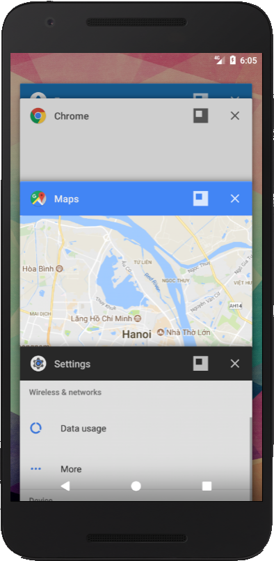
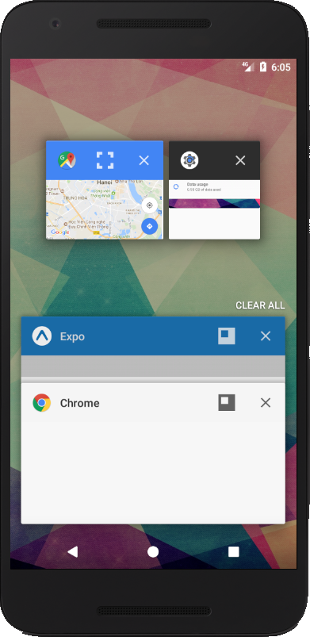
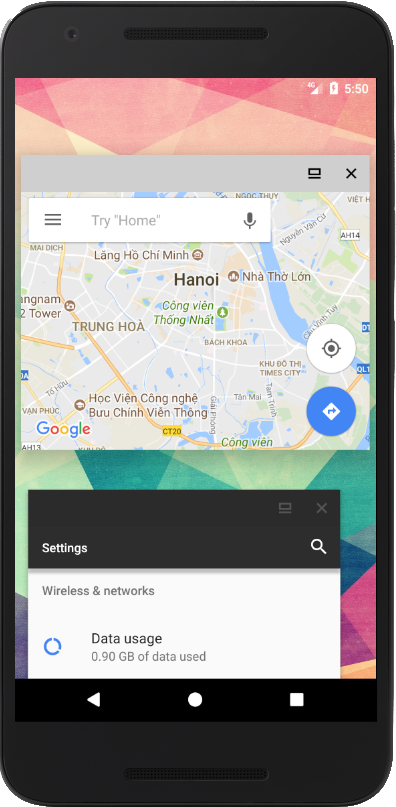

Tính năng chia đôi màn hình trên Android
Ngày nay, các thiết bị di động ngày càng có màn hình to, bộ nhớ lớn, ram nhiều, mục đích là để phục vụ các công việc
ngày càng nặng của người sử dụng. Và để phục vụ nhu cầu làm nhiều việc cùng lúc trên smartphone của người dùng
Google đã và đang phát triển các chức năng giúp Android có thể hoạt động đa nhiệm, chạy nhiều app cùng 1 lúc.
Từ Android 4.0 (Ice Cream Sandwich), một số hãng như LG và Samsung đã đưa tính năng chạy đa nhiệm cửa sổ vào các thiết bị của mình.
Đến Android 6.0 (Marshmallow), chức năng chia đôi màn hình đã được Google đưa thẳng vào Android, nhưng chỉ có thể bật trong Developer menu.
Đến Android 7.0 (Nougat), chức năng chia đôi màn hình đã hoạt động ổn định và đưa vào mọi phiên bản Android 7.0
Chế độ cửa sổ trên mọi thiết bị Android 7.0 trở lên
Trong phiên bản 7.0 này, Google còn có 1 chức năng ẩn, cho phép người dùng
mở app dưới dạng cửa sổ. Chức năng này thậm chí không thể bật trong Developer
menu mà phải dùng 1 thủ thuật nhỏ sử dụng ADB tool. Đây là một công cụ rất
mạnh của Android, trong việc debug, up rom android.
Nếu chưa có các bạn có thể tải tại đây
Mở cmd tại vị trí folder /platform-tools và chạy lệnh sau:
adb shell settings put global enable_freeform_support 1
Sau đó restart máy, kết quả rất ổn :D
  
Lưu ý một chút, chức năng này vẫn chưa ổn định và mới chỉ đang thử nghiệm,
nên nhiều khi sẽ gặp lỗi trong quá trình sử dụng. Mọi người vọc vạch
cẩn thận nha :D
Để tắt chế độ này chúng ta chạy lại lệnh bên trên với tham số là 0 nhé =))